Plantas: cultivador, microscópio, centrífuga, coletor, ícones e o gelo do lab
tools/sprites/v08_plantas.py (sprites) e tools/sprites/v08_plantas_report.py (cenas e esta página), saída em reports/design/v08_plantas/pendentes/. Nada foi pra assets/: quem copia depois do teu ok é o gerente. Checagem: 43 arquivos nos tamanhos exatos, alpha só 0/255, sem extras (a variante A fica em pendentes/_compare/).- Cultivador com base cheia (B), não com pernas (A): em 40×56 as pernas viram dois "colchetes" brancos e o vidro parece flutuar.
- Gelo colado na porta (B) pro lab: lê na hora como "porta congelada". A opção A (os blocos dos gelos-portão) custa zero arte e fica de reserva.
- UI no padrão atual (A), com o inventário à esquerda e a máquina à direita. A B segue o teu rascunho (inventário embaixo), mas foge do resto do jogo.
- Nomes que eu escolheria: Folha-gota (planta 1), Espiral-de-geada (planta 2) e Lírio-de-Ilves (planta 3).
1 · Prévias (960×540, só com os sprites)
Base no Úmido (rampa da névoa) e no Verde. Na fileira de cima, as 4 culturas maduras e uma planta 3 na etapa 2. Na de baixo: alga muda, alga pequena, planta 1 média, cultivador vazio parado e planta 2 seca (sem líquido, LED vermelho). Do lado do cultivador ficam o microscópio analisando e a centrífuga girando, e no fundo o Dispersor, o derretedor e o baú aprovados. Lá fora, 3 coletores de água (2 trabalhando, 1 parado) do lado do O₂, do aquecedor e do painel.
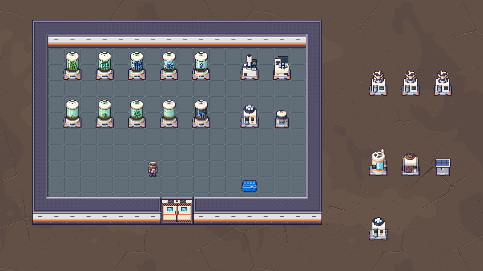
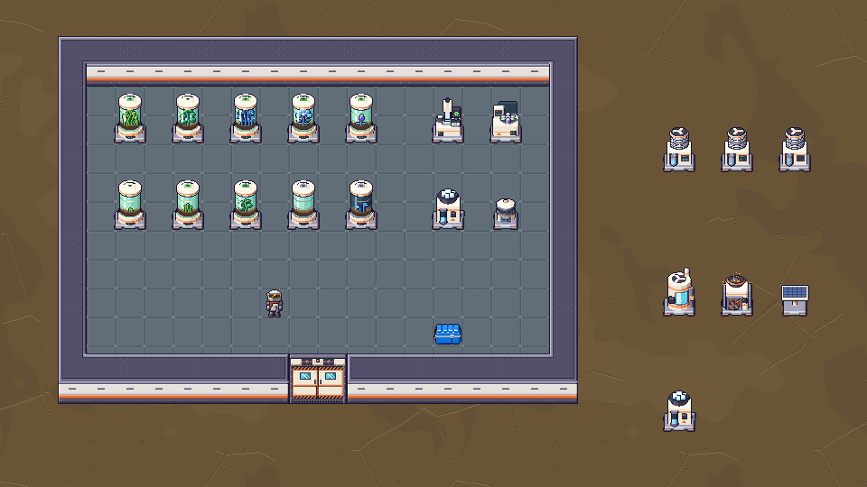
O lab da Ilves por dentro (a planta lab.txt, faixa gelada, Úmido)
O prop_microscope_digital virou o microscópio quebrado e o prop_sample_tank virou o cultivador quebrado. As máquinas quebradas das salas (derretedor, aquecedor, O₂) aparecem com o escurecimento de hoje (RUIN_BROKEN_TINT). As 2 máquinas novas quebradas já são desenhadas apagadas (sem luz, geada, vidro estourado), então aparecem sem o escurecimento. A porta dupla de baixo está tampada pelo gelo.
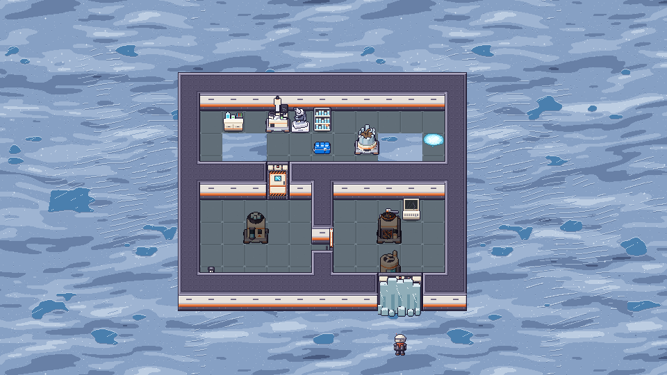
2 · Cultivador
Como montei: o corpo é um só (sapata B, pedestal creme com faixa laranja, anel de luz verde, cilindro de vidro com o nutriente verde-água, 2 anéis de luz, tampa com a luz de cultivo), e o que muda é o miolo: um PNG 40×56 transparente só com os pixels da planta, já recortado pelo vidro. O jogo desenha o corpo e o miolo por cima, no mesmo (x, y). O risco de brilho do vidro fica na frente da planta, e os anéis ficam atrás dela, de propósito: na frente eles "engradavam" a planta.
Referências do dono: o que eu aproveitei
- Ref A (cilindro sobre pernas): o vidro com líquido verde, o anel no meio do vidro e o tampo creme. As pernas eu testei (variante A abaixo).
- Ref B (base cheia): o pedestal largo, o anel de luz verde na junção vidro/base, os anéis finos no vidro e o tampo arredondado. O desenho é original, no r3d das nossas máquinas.
- Rascunho da UI: a terra no fundo do cilindro. No mundo ela virou um canteiro visto pelo vidro.
A × B (pernas × base cheia): recomendo B
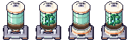
Na A, as pernas viram 2 colchetes brancos colados na sapata (a sapata B das máquinas já ocupa o lugar dos pés) e o vidro parece flutuar. A B tem a silhueta mais firme e do mesmo tamanho do derretedor.
Estados do corpo
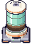
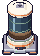
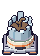
As 4 culturas × 4 etapas (muda · pequena · média · madura), compostas como no jogo
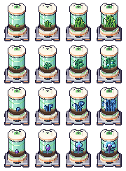
| Cultura | Visual | Por quê |
|---|---|---|
| Alga (cultura-controle) | fitas de alga onduladas, verde da Terra, bolinhas amarelas de flutuação na madura | é da Terra: o verde mais "normal" do jogo, sem nada do gelo |
| Planta 1 (amostra simples) | talo com folhas redondas e gordinhas, verde-menta; madura dá frutinhas-gota azul-água | a 1ª mistura: ainda planta de folha, só a "gota" denuncia o gelo |
| Planta 2 (mutação) | báculos de samambaia enrolados, azul-petróleo, ponta de geada e nós que brilham | o gelo começa a mandar: cor fria, forma estranha, brilho |
| Planta 3 (rara) | lírio de gelo: bulbo e talo violeta, flor de pétalas de cristal gordinhas e o miolo aceso | a mais "do gelo": cristal e luz própria, sem virar espinho (regra dos minérios: nada pontudo) |
3 · Microscópio, centrífuga e coletor de água
Mesma família das máquinas nv.1: sapata B, corpo creme, faixa laranja, painel escuro com LED, contorno #1b1630. Abaixo, ao lado do derretedor e do O₂ aprovados e do player, em 1:1 e ×4.
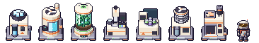
Microscópio
Bancada com o funil de gelo atrás à esquerda (entra gelo), platina com a lâmina acesa embaixo da objetiva com a lente ciano, braço em C, ocular, monitor do lado mostrando a célula verde e o rack com 3 frascos (verde, azul, dourado: as 3 amostras) na frente à direita (sai amostra). O quebrado tem a cabeça tombada pra frente, o monitor rachado, o funil vazio, só 1 frasco e geada na bancada.
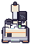
Centrífuga
Tambor baixo de cantos redondos com a boca aberta mostrando o rotor de 4 braços: 2 frascos verdes (alga) e 2 violeta (amostra), que é a receita dela. A tampa de acrílico fumê fica aberta atrás, e uma torre de controle à esquerda tem a tela. A tira gira 45° por quadro (os frascos alternam a cor, então o laço fecha sem pulo).
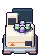
Coletor de água
Corpo creme com um condensador de aletas no alto (pega o orvalho, com gotinhas brilhando), ventoinha no tampo, e na frente a doca da cápsula: dá pra ver a cápsula enchendo e o bico pingando. À direita, o medidor de umidade (barras ciano). É diferente o bastante do gerador de O₂ (que é um cilindro liso com janela).
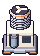
4 · Ícones 16×16
Em 1:1 e ×6, ao lado dos aprovados (icon_water_capsule, icon_ice, icon_drill).
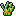
Amostras: frasco com tampa, um por tipo: simples verde-água com tampa ciano, mutação azul-violeta com um redemoinho claro dentro, rara dourada com brilhinhos em volta. A cápsula vazia é o desenho aprovado da cápsula com a água trocada por vidro e uma gotinha no fundo (pra ler "vazia", não "transparente").
5 · Gelo na porta do lab
Sequência inteiro → derretendo → quase → aberto, na fachada sul do lab (porta dupla ==), faixa gelada no Úmido, com o player pra escala. Os 2 caminhos:
B · gelo colado na porta (recomendo)
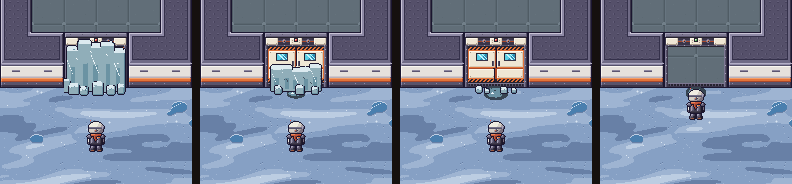
Uma placa grossa de gelo tampando o vão, feita de blocos em pé lado a lado (topo em degraus, nada de agulha), com blocos soltos no pé e veios de geada. Derretendo, a placa baixa pra metade, racha e pinga, e a porta aparece em cima. Quase, ficam só os cacos e a poça. Aberto, a porta abre normal e fica a poça. Usa a rampa ICE da faixa gelada no Úmido (a mesma dos gelos-portão nesse estágio), então combina com o gelo em volta.
A · blocos dos gelos-portão na frente (zero arte nova)
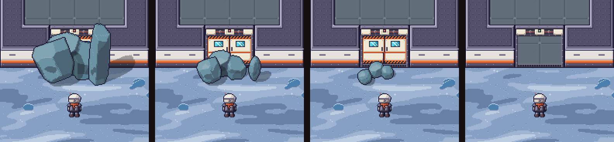
Laje, pedra e lasca dos ice_block_* aprovados, amontoadas na frente da porta, encolhendo pelos quadros (0, 3, 5 e 7). Reaproveita tudo do portão: colisão por quadro, melt, o som. Funciona, mas lê como "tem gelo no caminho" e não como "a porta está congelada", e o monte tampa a fachada do lab.
6 · Mock da UI do cultivador
Seguindo o teu rascunho: esquerda tanque com o nível de água (marcas das 5 cápsulas), barra vertical de crescimento ao lado e, embaixo, o slot de reserva e o de vazias (a spec diz que o cultivador solta cápsula vazia); meio o cilindro com a planta na etapa atual, sobre a terra (é o mesmo PNG da planta do mundo, ampliado ×2: o Dev não precisa de arte nova); direita os 4 slots de colheita. Embaixo, a faixa dos drones no padrão dos outros painéis (recebe cápsula, envia colheita e vazias). As cores, slots, fontes e cartões são os do game/ui.py (estilo B).
A · padrão atual (inventário à esquerda, máquina à direita): recomendo
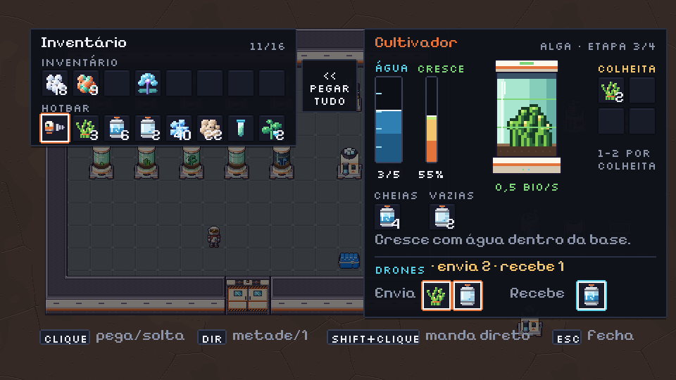
B · como no rascunho (máquina em cima, inventário embaixo)
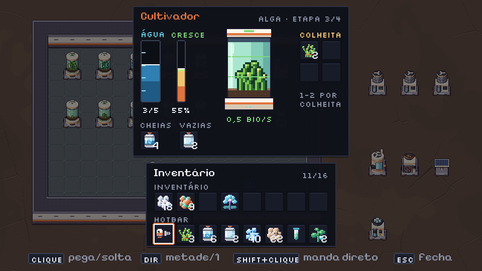
Na B, máquina + inventário empilhados não cabem nos 270 px lógicos da tela com tudo: tive que tirar a descrição e a faixa dos drones (que hoje todo painel de máquina tem). A A é o jeito que o derretedor, a fundição e o Dispersor já abrem, então o player não estranha e o Dev reaproveita o layout. A B fica mais parecida com o rascunho, mas seria a única janela do jogo nesse formato.
7 · Nomes das plantas
| Chave | Opção 1 | Opção 2 | Por quê |
|---|---|---|---|
plant_1 | Folha-gota ✓ | Trevo-d'água | folhas redondas e as frutinhas-gota de água do gelo |
plant_2 | Espiral-de-geada ✓ | Samambaia-fria | os báculos enrolados com ponta de geada |
plant_3 | Lírio-de-Ilves ✓ | Lanterna-de-gelo | a flor de cristal acesa; a 1ª homenageia a Dra. Ilves, que desconfiava do gelo |
✓ = a que eu escolheria. A alga continua Alga (ou "Cultura-controle" no tooltip da 1ª unidade, se tu quiser).
8 · Decisões que tomei sozinha
- Líquido verde-água claro (não o verde forte das refs): com o líquido escuro as plantas sumiam; claro, elas leem pelo contorno.
- Contorno da planta numa cor escura da própria planta (não o
#1b1630): ela está atrás do vidro, e o contorno roxo deixava ela "colada" na frente. - Anéis de luz atrás da planta e o risco de brilho do vidro na frente.
- Etapa madura = colheita pronta: a alga ganha as bolinhas, a planta 1 as frutinhas-gota, a 2 os nós acesos e a 3 abre a flor. Assim dá pra ver de longe qual cultivador tem colheita.
- Seco = sem líquido no tubo e LED vermelho, com a planta parada (não morre, como na spec).
- Máquinas quebradas desenhadas apagadas: o jogo não deve escurecer de novo com o
RUIN_BROKEN_TINT(fica preto demais). Ver "Pro Dev". - Ícones das 4 máquinas desenhados à mão (o r3d reduzido virava borrão em 16×16).
- Gelo da porta só na orientação h_s (a do
lab.txt) nesta rodada. As outras 3 (h_n, v_e, v_w) saem do mesmo script depois do teu ok no visual, porque as ruínas giram.
9 · Dúvidas pro dono
- Cultivador: B (base cheia) fechado? E as 4 culturas, cada uma lendo diferente o bastante?
- Gelo da porta: B (colado) ou A (blocos do portão)?
- UI: A (padrão) ou B (rascunho)? E o slot de vazias no painel do cultivador, pode ficar?
- Nomes: qual de cada par (ou outro)?
- A centrífuga gira a 5 fps igual às outras ou mais rápido (10 fps)?
- O lago verde das Algas e o musgo nas pedras (também da lista de arte da v0.8) ficam pra rodada 2, junto com o M1. Pode ser?
Pro Dev integrar
Âncora: todas as máquinas são 40×56 (tira 160×56, 4 quadros de 40, ~5 fps), ancoradas no centro da base como as nv.1 (_blit_anchored). Parado = PNG sem tira; trabalhando = tira.
| Arquivo | Tamanho | Quando |
|---|---|---|
machine_cultivator.png | 40×56 | parado: sem energia, ou sem cultura (com água) |
anim/anim_machine_cultivator.png | 160×56 | crescendo (energia + água + cultura, dentro da base) |
machine_cultivator_dry.png | 40×56 | tanque vazio (seco), com ou sem cultura |
machine_cultivator_broken.png | 40×56 | ruína do lab (troca o prop_sample_tank). Sem RUIN_BROKEN_TINT |
cultivator_crop_{algae,plant_1,plant_2,plant_3}_{0..3}.png | 40×56 | miolo: desenhar depois do corpo, no mesmo (x, y). Etapa 0 muda, 1 pequena, 2 média, 3 madura. Serve em cima do parado, de qualquer quadro da tira e do seco |
machine_microscope.png · anim/anim_machine_microscope.png | 40×56 · 160×56 | parado · analisando |
machine_microscope_broken.png | 40×56 | ruína do lab (troca o prop_microscope_digital). Sem tint |
machine_centrifuge.png · anim/anim_machine_centrifuge.png | 40×56 · 160×56 | parada · girando |
machine_water_collector.png · anim/anim_machine_water_collector.png | 40×56 · 160×56 | parado (cápsula vazia) · enchendo |
icon_{algae,plant_1,plant_2,plant_3,sample_basic,sample_mutant,sample_rare,water_capsule_empty}.png | 16×16 | itens |
icon_{cultivator,microscope,centrifuge,water_collector}.png | 16×16 | menu do construtor / estoque de máquinas |
lab_ice_door2_h_{0,1,2}.png | 64×72 | gelo da porta (opção B): em (x, y − 24) do 1º tile da porta dupla (o mesmo ponto do base_door2_h_s), depois dos 2 quadros fechados da porta. Os 16 px de baixo caem no tile de chão de fora. Etapa pela fração do thaw.gate_progress: 0 até 1/3, 1 até 2/3, 2 até abrir |
lab_ice_puddle_h.png | 64×72 | aberto: poça no chão de fora, mesmo ponto, desenhada na passada do chão (sem colisão) |
Ordem de desenho: corpo do cultivador → miolo (mesmo ponto); porta dupla → gelo (mesmo ponto, mesma ordem pelo pé da porta). UI: o cilindro do painel pode usar o PNG da planta do tools/sprites/v08_plants_art.py (grade 20×19, pé no meio da última linha), ampliado ×2 em px lógicos. Se o Dev quiser os 16 em arquivo, eu exporto como ui_crop_*.png.